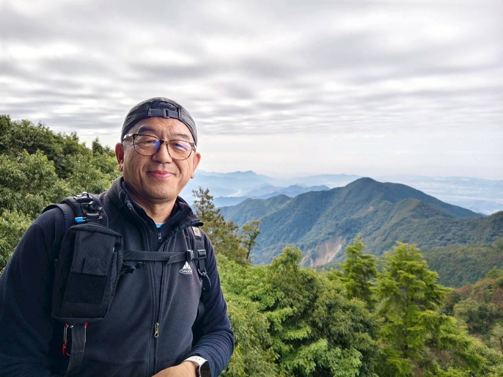
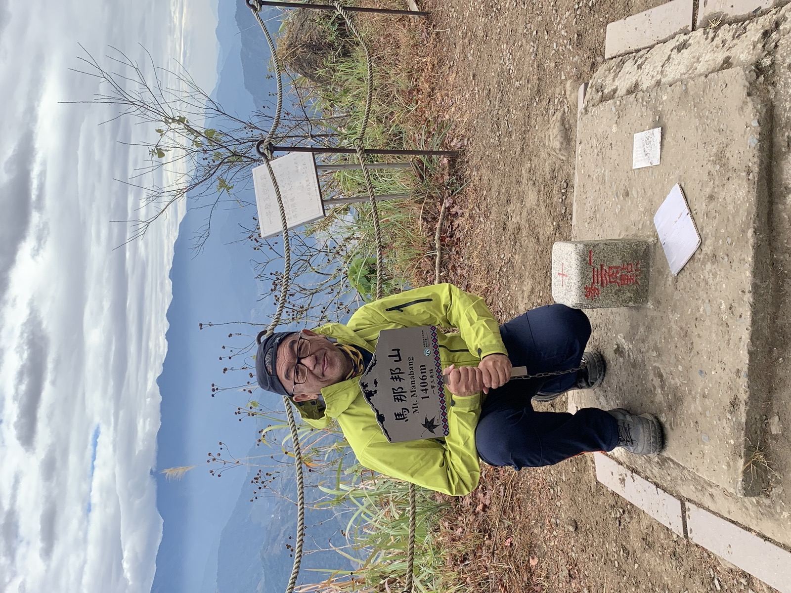
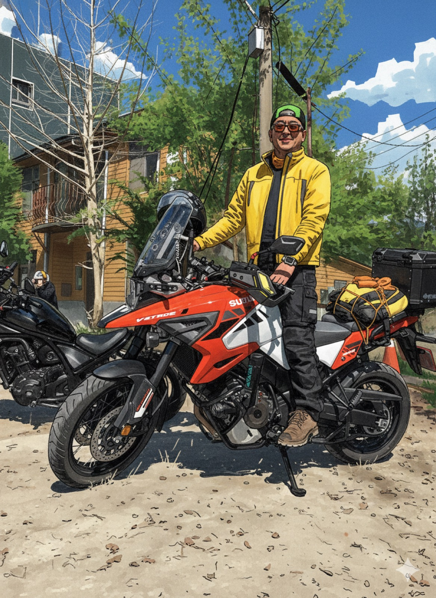

登山日誌
記錄日期、山名、路線、天氣、難度與心得。
Climbing Journal
登山日誌與網誌，記錄路線、山景、同行者、身體感受與生活觀察。山路也是一種教室。
記錄日期、山名、路線、天氣、難度與心得。
把山上的觀察寫成可分享的生活文章。
可與 La Neige 的阿山哥俱樂部互相連結，形成社群活動。
可加入 GPX、照片牆、路線評分與山友留言。
Climbing Posts
下方固定示範作品會跨電腦顯示；現場上傳則會先保存在目前瀏覽器，適合課堂即時展示。

以山景自拍作為登山日誌示範，記錄地點、天氣、同行者與路線感受，讓爬山虎系列成為可累積的生活網誌。

每一次登山都能留下日期、山名、路線難度與身體感受，作為往後課堂討論、生活書寫與社群互動素材。

爬山虎系列也可延伸到騎士路線、車款介紹與旅途觀察，連結阿山哥俱樂部的生活風格與會員互動。
記錄路線、天氣、體力與路上的觀察，讓登山不只是抵達山頂，也成為生活書寫。